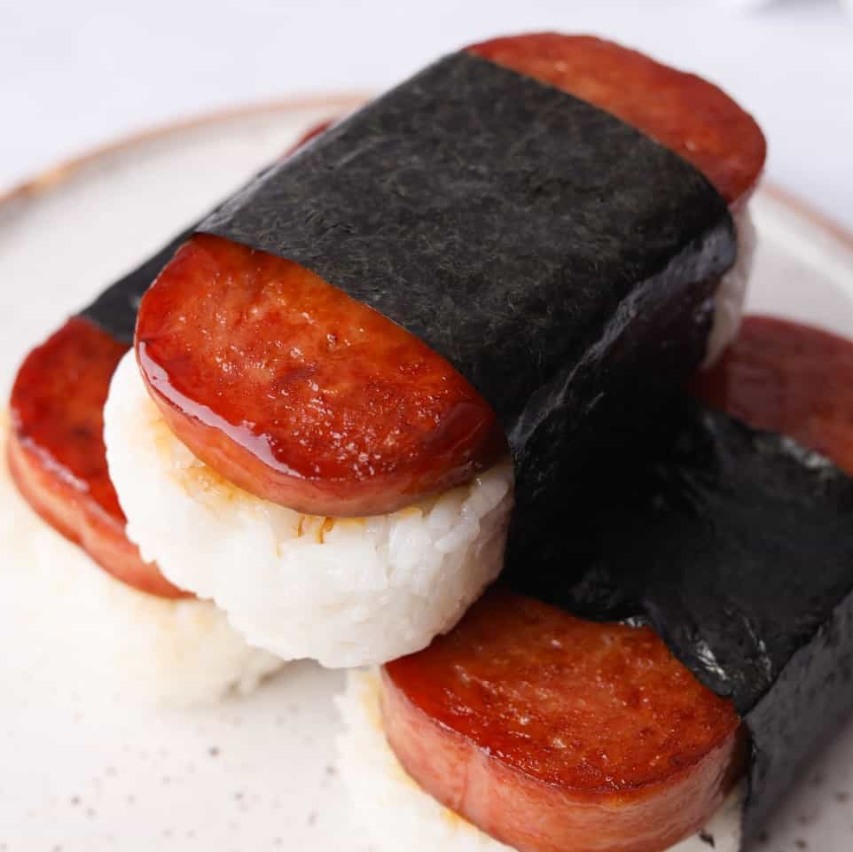

Spam Musubi

Description
Here's a fulfilling recipe for some delicious spam musubi! It's an easy make and an even more tasty snack.
List of Ingredients
- 2 Cups of Rice
- 1 Can of Spam
- Seaweed (perforated)
- Soy Sauce
- Sugar
Directions
- Take and rinse your two cups of rice thoroughly in water until the water is clear
- Add the rice to your rice cooker, adding enough water to make the rice moist (GIGI)
- While the rice is cooking, open up the can of spam and dice it into small cubes
- Mix together the diced spam and some sugar and soy sauce to your liking
- Fry the spam to your liking
- Mix together the fried spam with rice and enjoy lol this isn't musubi